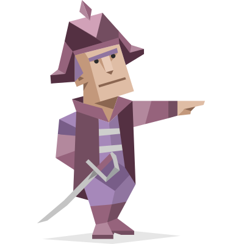
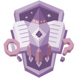
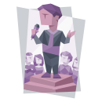

Mijn naam is Tijn Kaars, 22 jaar oud en student Commerciële Economie met specialisatie Digital Marketing aan de Hogeschool van Amsterdam. Ambitieus, analytisch en competitief — dat zijn woorden die mij goed omschrijven, én die ik terugzie in zowel sport als studie.
Sport is een rode draad in mijn leven. Als aanvoerder van mijn voetbalteam heb ik geleerd dat resultaten niet vanzelf komen: je hebt discipline, focus en een scherpe instelling nodig. Die mentaliteit neem ik mee naar de werkvloer. Ik wil niet alleen meedoen — ik wil het goed doen.
Tijdens mijn stage bij TBWA\NEBOKO, een van de grootste reclamebureaus van Nederland, heb ik de strategieafdeling van binnenuit meegemaakt. Van consumenteninzicht naar positionering, van briefing naar creatieve strategie — het was een bevestiging dat dit het vakgebied is waar ik wil groeien.
Mijn doel? Doorgroeien als strateeg in de wereld van marketing, met een focus op de sportsector.
Uit de 16Personalities-test blijkt dat ik een ENTJ-A ben: extravert, intuïtief, rationeel en besluitvaardig. Ik ben een natuurlijke leider die visie omzet in actie — strategisch, direct en zelfverzekerd. Mijn rol is Analyst, strategie: People Mastery. Mijn valkuil? Ongeduld met mensen die minder snel schakelen. Maar ook dat herken ik — en ik werk er bewust aan.

De Commandant
Commandanten zijn gedurfd, creatief en wilskrachtig — ze vinden altijd een weg vooruit, of ze maken er zelf een.

De Analist
Analisten omarmen rationaliteit en zijn sterk in intellectuele vraagstukken. Onafhankelijk, open van geest en gedreven door logica.

People Mastery
People Masters zoeken sociale verbinding, communiceren met gemak en zijn zelfverzekerd — zowel in groepen als in leiderschapsrollen.
"Tijn viel direct op door zijn proactieve houding, opgewekte persoonlijkheid en heldere manier van communiceren. Hij werkt snel, is inhoudelijk sterk en levert zijn werk altijd volledig en doordacht aan. Samenwerken met hem was dan ook een oprecht genot. Met deze instelling, energie en kwaliteiten gaat hij ongetwijfeld heel ver komen."
"Tijn is een geweldige student digital marketing. Zijn leergierigheid en kritische houding zorgen ervoor dat hij tot in detail is voorbereid om digital marketing vraagstukken tot een goed einde te brengen. Potentiële werkgevers mogen heel blij zijn als ze Tijn voor zich weten te winnen."
"Tijn viel tijdens zijn stage bij TBWA\NEBOKO op door zijn volwassen en professionele houding. Hij pakte werkzaamheden zelfstandig en vlot op en leverde inhoudelijk sterk werk. Ook in de samenwerking was hij prettig en betrouwbaar. Kortom, een aanvulling voor het team."
Bij TBWA\NEBOKO ontdekte ik dat presteren niet alleen over talent gaat — het vraagt systematisch werken, analyse en de bereidheid om te blijven verbeteren.
TBWA\NEBOKO is een indrukwekkend bureau. Groot, professioneel en vol talent. En juist dat maakte het ook soms lastig. Na de eerste maanden begon ik te merken dat de opdrachten die ik uitvoerde een vast patroon kregen. Maar daarmee verdween ook de uitdaging.
Ik ben iemand die energie haalt uit nieuwe situaties, scherp nadenken en het gevoel dat ik ergens beter in word. Dat was een eerlijke ontdekking: ik heb variatie en groei nodig om op mijn best te zijn.
De stage leerde me niet alleen wat ik kan, maar ook wat ik wil — en wat niet. Een groot bureau als TBWA is bijzonder om stage te lopen, maar als eindbestemming past het niet bij mij. Ik wil niet voor merken werken — ik wil zelf een merk zijn.
Mijn uiteindelijke doel is het opbouwen van een eigen e-commerce bedrijf. Geen kledingmerk of lifestylelabel, maar een merk met een echte functie — producten die mensen concreet verder helpen in hun persoonlijke ontwikkeling. Wat dat precies wordt, weet ik nog niet. Maar de richting is helder: iets bouwen dat mensen functioneel sterker maakt.
Die ambitie komt voort uit drie dingen die mij al jaren fascineren: consumentengedrag en psychologie, technologie en AI, en de kracht van een sterk merk. Marketing is voor mij geen eindbestemming — het is het fundament waarop ik iets eigens ga bouwen.
Eerst ga ik verder leren. Vanaf september 2026 studeer ik een semester in Tokio, Japan — een bewuste keuze om mezelf buiten mijn comfortzone te plaatsen, internationaal te denken en nieuwe perspectieven op te doen. Japan staat bekend om zijn unieke kijk op productdesign, consumentenervaring en innovatie. Precies de omgeving die mij inspireert.
Dat ik op de goede weg zit, blijkt uit de feedback die ik meekreeg van de strategieafdeling. Wendeline Sassen, Strategy Director bij TBWA\NEBOKO, schreef dat ik een van de beste stagiairs was die ze ooit hadden gehad — proactief, inhoudelijk sterk en professioneel. Dat geeft vertrouwen.
Ik wil doorgroeien in een omgeving waar ik breed inzetbaar ben, snel leer en echt impact kan maken. Niet de grootste organisatie, maar de juiste.
Wil je meer weten over mij, mijn stage-ervaringen of mijn ambities? Ik ben te vinden op onderstaande platformen. Geen lange mails — gewoon een bericht is genoeg.